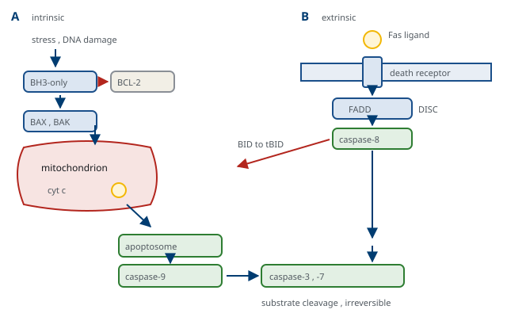

M01-W12-L02 · 인체일반생물학과 기초세포생물학
세포 재생과 세포 사멸
Cell Renewal and Cell Death
학습목표
- 조직을 세포 교체 속도로 분류하고 각 부류의 손상 후 반응을 설명한다.
- 줄기세포의 두 성질을 정의하고 분화 능력에 따른 분류를 구분한다.
- 성체 줄기세포의 niche 개념을 설명하고 장 상피와 피부, 조혈계의 예로 구체화한다.
- 유도만능줄기세포의 제작 원리와 임상 응용의 과제를 설명한다.
- 세포사멸과 괴사의 차이를 형태·기전·조직 반응의 세 축에서 구분한다.
- 세포사멸의 내재 경로와 외재 경로를 단계로 서술하고 두 경로가 만나는 지점을 쓴다.
- Caspase의 분류와 활성화 방식을 설명하고 사멸 과정의 비가역성이 어디에서 오는지 밝힌다.
- 사멸한 세포가 제거되는 과정과 그 실패가 만드는 결과를 설명한다.
- 조절된 세포사의 다른 양식을 들고 각각이 염증과 어떻게 연결되는지 설명한다.
- Autophagy의 단계와 조절을 쓰고 세포사와의 관계를 논한다.
선수지식
- M01-W12-L01 세포주기와 그 조절 — 주기를 떠나는 세 가지 길, 검문지점과 p53
- M01-W10-L01 미토콘드리아·엽록체·퍼옥시좀의 구조와 기능 — BAX·BAK에 의한 바깥막 투과화, cytochrome c, mPTP
- M01-W11-L02 세포 신호전달: 수용체와 2차 전령 — AKT에 의한 생존 신호, 수용체의 종류
- M01-W09-L01 단백질 표적화와 소포 수송 — lysosome과 autophagy의 접점, phosphatidylserine의 노출
강의 구성
- 1. 조직은 교체 속도로 분류된다
- 2. 줄기세포의 두 성질
- 3. Niche — 줄기세포는 장소에 의해 정의된다
- 4. 유도만능줄기세포
- 5. 손상 후의 과정 — 상처 치유
- 6. 세포사멸과 괴사 — 두 가지 죽음
- 7. 세포사멸의 두 경로
- 8. 사멸한 세포의 제거
- 9. 조절된 세포사의 다른 양식
- 10. Autophagy
- 11. 연결
1. 조직은 교체 속도로 분류된다
성인의 몸에서 하루에 수천억 개의 세포가 죽고 그만큼이 새로 만들어진다. 전체 세포 수는 거의 일정하므로, 생성과 소멸이 정밀하게 맞추어져 있다는 뜻이다. 이 균형이 이 수업의 주제다.
조직은 세포를 얼마나 빨리 교체하는지로 세 부류로 나뉘고, 그 분류가 손상 후의 반응을 정한다.
| 부류 | 교체 속도 | 예 | 손상 후 |
|---|---|---|---|
| 지속 분열 조직 | 며칠~몇 주 | 장 상피, 표피, 조혈계, 생식 상피 | 줄기세포가 완전히 재생한다 |
| 안정 조직 | 평소 거의 분열하지 않는다 | 간, 신장 세관, 췌장, 혈관 내피 | 자극을 받으면 분열해 재생한다 |
| 영구 조직 | 분열하지 않는다 | 심근, 뼈대근육, 신경세포 | 재생되지 않고 섬유화로 대체된다 |
이 분류가 임상 소견을 설명한다. 항암제와 방사선이 골수, 점막, 모발을 먼저 손상시키는 것은 그 조직이 지속 분열하기 때문이다. 간은 70%를 절제해도 수 주 안에 원래 질량을 회복하지만, 심근은 경색 부위가 흉터로 남아 기능이 영구히 줄어든다. 같은 손상이 조직에 따라 완전한 회복과 영구적 결손으로 갈린다는 것이 재생 능력의 차이에서 나온다.
구별해야 하는 두 용어도 정리해 둔다. 재생(regeneration)은 잃어버린 세포가 같은 종류의 세포로 대체되어 구조와 기능이 복원되는 것이고, 수선(repair)은 결합조직이 그 자리를 채워 구조를 메우되 기능은 복원되지 않는 것이다. 어느 쪽이 일어날지는 두 가지가 정한다. 그 조직의 재생 능력과 기질의 뼈대가 남아 있는지다. 기저막과 기질이 보존되면 세포가 그 틀을 따라 배열해 재생되고, 손상이 기질까지 파괴하면 세포가 제자리를 찾지 못해 섬유화로 끝난다. 간이 예다. 간세포만 손상된 급성 간염은 완전히 재생되지만, 반복 손상으로 기질 구조가 바뀐 간경변은 되돌아가지 않는다.
간의 재생을 조금 더 보면 "안정 조직"의 뜻이 분명해진다. 간의 부분 절제 뒤 재생을 담당하는 것은 전용 줄기세포가 아니라 기존의 간세포 자신이다. 평소 거의 분열하지 않던 세포가 성장인자(HGF, EGF)와 사이토카인의 자극으로 주기에 들어가고, 원래 질량에 도달하면 멈춘다. 멈추는 신호가 무엇인지는 완전히 정리되지 않았으나, 간의 크기와 대사 부담을 감지하는 되먹임이 제시된다. 반복 손상으로 간세포의 재생 능력이 소진되면 담도 쪽의 전구세포가 동원된다는 보고가 있어, 주된 경로가 막혔을 때의 예비 경로가 존재하는 것으로 본다. 이 구조는 다른 조직에서도 관찰된다. 폐의 상피에서도 특정 세포가 손상되면 다른 종류의 세포가 전환해 그 자리를 채우는 가소성이 보고되었다. 재생의 경로가 하나로 고정되어 있지 않다는 점이 최근의 이해다.
2. 줄기세포의 두 성질
줄기세포를 정의하는 성질은 두 가지이고, 둘을 함께 가져야 한다.
- 자기 재생(self-renewal): 분열해도 자기와 같은 줄기세포를 유지한다.
- 분화 능력(potency): 하나 이상의 성숙한 세포 종류로 분화할 수 있다.
둘을 동시에 만족시키는 방법이 비대칭 분열이다. 한 번의 분열에서 하나는 줄기세포로 남고 다른 하나는 분화 경로로 들어간다. 비대칭을 만드는 방식은 두 가지다. 세포 안의 결정 인자가 한쪽으로 몰린 상태에서 분열하는 내인성 비대칭과, 두 딸세포가 서로 다른 환경에 놓이는 외인성 비대칭이다. 후자가 다음 절의 niche 개념으로 이어진다.
분화 능력의 범위로 줄기세포를 분류한다.
| 분류 | 범위 | 예 |
|---|---|---|
| Totipotent | 배아와 배아 외 조직 전부 | 접합자와 초기 분열 세포 |
| Pluripotent | 세 배엽에서 유래한 모든 세포 | 배아줄기세포, 유도만능줄기세포 |
| Multipotent | 한 계통 안의 여러 세포 | 조혈모세포, 신경 줄기세포 |
| Unipotent | 한 종류 | 표피의 기저세포, 근육의 위성세포 |
조혈계가 multipotent 줄기세포의 표준 모형이다. 하나의 조혈모세포에서 적혈구, 혈소판, 모든 백혈구가 나오며, 그 계통 분화가 전사인자의 조합과 사이토카인으로 정해진다. 이 체계는 이식으로 기능을 증명할 수 있다는 점에서 특별하다. 방사선으로 골수를 없앤 동물에 소수의 세포를 넣어 전 계통이 회복되는지를 보는 실험이 줄기세포의 정의를 조작적으로 만들었고, 그 연장선에 조혈모세포 이식이 있다.
용어에서 주의할 점이 하나 있다. 전구세포(progenitor)는 분화 경로에 들어간 세포로 제한된 횟수만 분열하며 자기 재생 능력이 없거나 약하다. 조직에서 실제로 분열하고 있는 세포의 대부분이 줄기세포가 아니라 전구세포이고, 줄기세포는 상대적으로 드물고 천천히 분열한다. 그래서 "분열이 왕성한 세포"와 "줄기세포"는 같지 않다.
계통 분화를 추적하는 방법도 알아 둘 만하다. 어떤 세포가 어떤 세포로부터 나왔는지를 알려면 표지를 붙여 따라가야 한다. 계통 추적(lineage tracing)은 특정 세포에서만 작동하는 promoter로 형광 단백질을 영구히 켜 두고(M01-W06-L01의 Cre-loxP 체계를 쓴다) 그 세포와 모든 자손을 표지하는 방법이다. 이 방법으로 장 crypt 바닥의 세포가 상피 전체를 공급한다는 것, 그리고 하나의 crypt가 결국 하나의 줄기세포에서 유래한 세포로 채워진다는 것이 밝혀졌다. 사람에서는 유전적 조작을 할 수 없으므로 다른 표지를 쓴다. 체세포 변이와 mtDNA 변이, 그리고 DNA 메틸화 양상을 자연적인 바코드로 삼아 세포 사이의 계통 관계를 재구성하는 방법이 개발되었다. 한 사람의 몸에서 세포 수천 개의 계통 나무를 그린 연구가 보고되었고, 이 접근이 사람 조직의 교체 속도를 직접 추정하는 수단이 되고 있다.
3. Niche — 줄기세포는 장소에 의해 정의된다
줄기세포의 성질은 세포 자신에게만 있는 것이 아니다. 특정 위치에 있을 때 줄기세포로 행동하고, 그 자리를 떠나면 분화한다. 그 위치를 niche라 한다. Niche를 이루는 것은 이웃 세포, 세포외기질, 그리고 거기서 나오는 신호(Wnt, Notch, BMP, Hedgehog)다. 즉 M01-W11-L01과 M01-W11-L03의 내용이 여기서 조직 수준으로 나타난다.
장 상피가 가장 잘 정리된 예다. Crypt 바닥에 줄기세포가 있고, 그 옆의 Paneth 세포와 아래의 기질세포가 Wnt를 공급한다. 줄기세포가 분열해 위로 밀려 올라가면 Wnt 농도가 떨어지므로 분화가 시작되고, 흡수세포와 분비세포로 갈린다. 어느 쪽이 될지는 Notch의 측방 억제가 정한다. 상피는 3~5일마다 전부 교체되고, 수명을 마친 세포는 villus 끝에서 떨어져 나간다. 공간적인 신호 구배가 분화의 단계를 만들고, 세포가 그 구배를 따라 이동하며 성숙한다.
표피는 기저층에 줄기세포가 있고, 분열한 세포가 위로 올라가며 keratin을 채우고 핵과 소기관을 잃어 각질층이 된다. 이 과정 자체가 프로그램된 세포사의 특수한 형태이며, 세포가 죽어서 만든 층이 장벽이 된다. 골수에서는 혈관과 뼈 표면 주변의 niche가 조혈모세포를 유지하며, 거기서 나오는 CXCL12 신호가 세포를 붙잡아 둔다. 이 신호를 약물로 차단하면 조혈모세포가 혈액으로 나오는데, 이식용 세포를 채집할 때 쓰는 가동화(mobilization)의 기전이 이것이다.
Niche 개념의 임상적 의미가 두 가지다. 첫째, 줄기세포를 옮기는 치료는 그 세포가 들어갈 자리가 있어야 성립한다. 조혈모세포 이식에서 전처치로 골수를 비우는 것이 그 자리를 만드는 과정이다. 둘째, 종양에도 비슷한 구조가 제안된다. 소수의 세포가 자기 재생을 유지하며 종양을 공급한다는 종양 줄기세포 모형이며, 그 세포가 분열이 느려 항암제를 피하고 재발의 원천이 된다는 해석이다. 다만 이 모형이 모든 종양에 적용되는지, 그리고 그 성질이 고정된 것인지 환경에 따라 바뀌는 것인지는 논쟁 중이다.
Niche의 신호가 어긋나면 결과가 두 방향으로 나타난다. 신호가 약해지면 줄기세포가 소진되어 조직이 재생되지 않고, 신호가 과도하면 분화하지 않는 세포가 쌓인다. 장에서 Wnt 경로가 켜져 있는 변이가 폴립을 만드는 것이 후자의 예이며(M01-W11-L03), 그 폴립이 crypt의 niche 구조를 흉내는 방식으로 자란다는 관찰이 있다. 노화한 조직에서 재생 능력이 떨어지는 것도 줄기세포 자체의 변화만이 아니라 niche의 변화에서 온다는 자료가 쌓였다. 늙은 동물의 줄기세포를 젊은 환경에 넣으면 기능이 일부 회복되고, 반대의 조합에서는 떨어진다는 실험이 그 근거다. 재생 능력은 세포와 환경의 조합이고, 어느 쪽이 먼저 늙는지가 조직마다 다르다.
4. 유도만능줄기세포
2006년에 보고된 실험이 이 분야를 바꾸었다. 체세포에 네 개의 전사인자(Oct4, Sox2, Klf4, c-Myc)를 넣으면 세포가 배아줄기세포와 비슷한 상태로 돌아간다. 이것이 유도만능줄기세포(induced pluripotent stem cell, iPSC)다.
이 결과가 뜻하는 바가 두 가지다. 첫째, 분화가 비가역적이지 않다. 체세포의 유전체는 그대로이고 발현 양상만 바뀌어 있었으므로, 그 양상을 되돌리면 세포도 되돌아간다. M01-W07-L02에서 다룬 master regulator와 염색질 상태의 계승이 이 관찰의 분자적 배경이다. 둘째, 환자 자신의 세포로 만능줄기세포를 만들 수 있다. 배아를 쓰지 않으므로 윤리적 제약이 줄고, 면역 거부의 문제도 줄어든다.
쓰임은 세 갈래다.
- 질환 모형: 환자의 세포로 iPSC를 만들고 해당 조직의 세포로 분화시켜 질환을 체외에서 재현한다. 유전자 교정으로 변이만 되돌린 isogenic 대조를 만들면 그 변이의 효과를 분리해 볼 수 있다.
- 약물 시험과 독성 평가: 사람 심근세포와 간세포를 만들어 약물의 효과와 독성을 본다.
- 세포 치료: 분화시킨 세포를 이식한다. 망막 색소상피, 도파민 신경세포, 심근세포, 췌도 세포에서 임상 시험이 진행된다.
과제도 분명하다. 미분화 세포가 남으면 종양이 생길 수 있고, 역분화와 재분화 과정에서 변이가 생길 수 있으며, 환자 맞춤 세포를 만드는 데 비용과 시간이 크다. 그래서 여러 사람에게 쓸 수 있도록 면역 적합성이 넓은 세포주를 미리 준비하거나, 면역 인식을 피하도록 편집한 세포를 쓰는 방향이 모색된다. 또 체외에서 만든 세포가 생체의 성숙한 세포와 완전히 같지 않다는 문제가 남아 있다. 특히 심근세포와 신경세포에서 성숙도가 태아기 수준에 머문다는 지적이 반복된다.
5. 손상 후의 과정 — 상처 치유
재생과 사멸의 균형이 실제로 작동하는 모습을 보려면 상처 치유를 보면 된다. 과정은 서로 겹치는 네 단계로 이루어진다.
- 지혈: 혈관이 수축하고 혈소판이 모여 섬유소 그물과 함께 응고 덩이를 만든다. 이 덩이가 임시 뼈대이면서 성장인자의 저장소가 된다.
- 염증: 호중구가 먼저 들어와 세균과 죽은 조직을 제거하고, 이어 대식세포가 들어와 잔해를 치우고 성장인자를 분비해 다음 단계를 켠다. 대식세포는 시간이 지나며 염증을 일으키는 성질에서 치유를 돕는 성질로 전환한다.
- 증식: 상피세포가 상처면을 덮고(상피화), 섬유아세포가 들어와 collagen을 분비하고, 혈관이 새로 자란다. 이 세 가지가 함께 일어난 조직을 육아조직이라 한다.
- 성숙과 재형성: Collagen III가 I형으로 교체되고 섬유가 장력 방향으로 재배열되며, 불필요한 혈관과 세포가 세포사멸로 제거된다. 이 단계는 수개월에서 수년에 걸친다.
이 과정에서 이 수업의 두 주제가 모두 쓰인다. 증식은 줄기세포와 전구세포의 활성화이고, 성숙은 과잉 생산된 세포와 혈관의 세포사멸이다. 즉 치유는 만드는 과정만이 아니라 만든 것을 정리하는 과정이기도 하다. 정리가 실패하면 결과가 질환이 된다.
6. 세포사멸과 괴사 — 두 가지 죽음
세포의 죽음은 한 종류가 아니다. 고전적으로 두 양식을 구분하며, 그 차이가 조직의 반응을 정한다.
| 항목 | 세포사멸(apoptosis) | 괴사(necrosis) |
|---|---|---|
| 성질 | 프로그램된 능동 과정 | 손상에 의한 수동 붕괴 |
| 에너지 | ATP를 요구한다 | ATP 고갈 상태에서 일어난다 |
| 형태 | 세포가 쪼그라들고 염색질이 응축된다 | 세포가 부풀고 막이 터진다 |
| 막의 상태 | 유지된다. 조각이 소포로 싸인다 | 터져 내용물이 밖으로 쏟아진다 |
| 염색질 | 규칙적으로 절단된다 | 무작위로 분해된다 |
| 조직 반응 | 염증이 거의 없다 | 염증이 일어난다 |
| 범위 | 개별 세포 | 보통 구역 단위 |
마지막 세 줄이 핵심이다. 세포사멸에서는 세포가 막을 유지한 채 조각으로 나뉘고 이웃이나 대식세포가 그 조각을 삼키므로 내용물이 밖으로 나오지 않는다. 그래서 염증이 생기지 않는다. 괴사에서는 막이 터져 세포 안의 물질이 쏟아지고, 그 물질이 M01-W10-L01에서 본 손상 신호(mtDNA, ATP, 핵 단백질)로 작동해 염증을 일으킨다. 염증의 유무가 두 양식을 가르는 가장 실용적인 기준이며, 조직 소견에서 염증세포의 침윤 여부로 추정한다.
세포사멸이 필요한 이유를 정리해 둔다. 첫째, 발생에서 구조를 만든다. 손가락 사이의 물갈퀴가 제거되고, 과잉 생산된 신경세포 가운데 표적에 연결되지 못한 것이 제거되며, 올챙이의 꼬리가 사라진다. 둘째, 면역계에서 자기를 공격하는 세포를 제거한다. 셋째, 손상되거나 감염된 세포를 조용히 치운다. 넷째, 조직의 세포 수를 유지한다. 즉 세포사멸은 손상의 결과가 아니라 발생과 항상성의 수단이다.
세포사멸이 에너지를 요구한다는 점도 중요한 구별점이다. Apoptosome의 형성과 caspase의 활성화, 그리고 세포를 조각으로 나누고 막을 재배치하는 과정에 ATP가 쓰인다. 그래서 ATP가 바닥난 세포는 세포사멸을 완결할 수 없고 괴사로 간다. 같은 자극의 세기에 따라 결과가 갈리는 현상이 이 사실에서 나온다. 약한 허혈에서는 세포사멸이, 심한 허혈에서는 괴사가 우세하며, 경색 부위의 중심은 괴사이고 주변부에는 세포사멸이 섞여 관찰된다. 죽는 방식이 세포의 에너지 상태에 달려 있다는 점은 치료의 시간 창을 설명하기도 한다. 재관류가 빠르면 에너지를 회복한 세포가 조절된 방식으로 처리되지만, 늦으면 구역 전체가 괴사로 간다.
실험과 병리 진단에서 세포사멸을 어떻게 확인하는지도 알아 두어야 한다. 네 가지 지표가 쓰이며 각각 다른 단계를 본다. 첫째, 형태다. 세포의 수축, 염색질의 응축, 그리고 쪼그라든 조각이 광학 현미경에서 관찰된다. 둘째, 막의 비대칭 상실이다. 정상 세포는 phosphatidylserine을 막의 안쪽에만 두는데, 세포사멸이 시작되면 그것이 바깥으로 나온다. 이 지질에 결합하는 annexin V를 표지해 유세포분석으로 세는 방법이 표준이다. 셋째, DNA의 절단이다. 염색질이 nucleosome 단위로 잘리므로 전기영동에서 약 180 염기쌍 간격의 사다리 무늬가 나타나고, 조직 절편에서는 잘린 DNA 말단을 표지하는 TUNEL 염색으로 본다. 넷째, caspase의 활성이다. 절단된 caspase-3에 특이적인 항체로 염색하거나, 기질을 넣어 활성을 측정한다. 네 지표 모두 한계가 있다. Annexin V는 막이 이미 터진 괴사 세포에서도 양성이고, TUNEL은 괴사의 무작위 절단에서도 신호가 나며, 조직 절편은 한 시점만 보여 주므로 죽은 세포가 빨리 치워지는 조직에서는 세포사멸의 실제 빈도가 과소평가된다. 그래서 보고된 세포사멸 비율은 제거 속도에 달린 값이고, 서로 다른 조직 사이에서 그 수치를 직접 비교해서는 안 된다. 같은 이유로 세포사멸이 늘었다는 결론을 내리려면 지표 두 가지 이상을 함께 보고, 제거를 담당하는 대식세포의 수도 같이 확인하는 것이 원칙이다.
7. 세포사멸의 두 경로
세포사멸을 실행하는 것은 caspase라는 protease 가족이다. Cysteine을 활성 부위에 가지고 aspartate 뒤를 끊으므로 그 이름이 붙었다. 역할에 따라 두 부류로 나눈다.
- 개시 caspase(caspase-8, -9, -10): 신호를 받아 활성화되고 실행 caspase를 자른다.
- 실행 caspase(caspase-3, -6, -7): 수백 종의 기질을 절단해 세포를 해체한다.
활성화 방식에 공통 원리가 있다. 개시 caspase는 여러 분자가 한자리에 모이는 것만으로 활성화된다. 농도가 국소적으로 높아지면 서로를 절단하기 때문이다. 그래서 세포사멸 신호의 핵심은 "caspase를 켜는 것"이 아니라 "caspase를 모을 발판을 만드는 것"이다. 두 경로가 각각 다른 발판을 쓴다.
내재 경로(미토콘드리아 경로)
- 세포 안의 스트레스(DNA 손상, 성장인자 결핍, 소포체 스트레스, oncogene의 과활성)가 BH3-only 단백질을 유도하거나 활성화한다.
- BH3-only 단백질이 BCL-2와 BCL-xL의 억제를 풀거나 BAX·BAK를 직접 활성화한다.
- BAX와 BAK가 미토콘드리아 바깥막에 모여 구멍을 만든다(MOMP).
- cytochrome c가 세포질로 나와 Apaf-1과 결합해 apoptosome을 만든다. 이것이 caspase-9을 모으는 발판이다.
- Caspase-9이 실행 caspase를 자른다.
외재 경로(사멸 수용체 경로)
- Fas ligand나 TNF 같은 리간드가 세포 표면의 사멸 수용체(Fas, TNFR1)에 결합한다.
- 수용체의 세포질 쪽에 adaptor(FADD)가 모여 DISC라는 발판을 만든다.
- 발판에 caspase-8이 모여 활성화된다.
- Caspase-8이 실행 caspase를 자른다.
두 경로가 만나는 지점도 정해져 있다. 일부 세포에서는 외재 경로의 caspase-8이 BH3-only 단백질 BID를 잘라 tBID를 만들고, tBID가 내재 경로를 켠다. 즉 외재 신호가 미토콘드리아를 통해 증폭된다. 간세포처럼 caspase-8의 활성만으로는 신호가 약한 세포에서 이 증폭이 필수적이며, 그래서 BCL-2 계열의 균형이 외재 경로의 결과까지 좌우한다.

비가역성은 어디에서 오는가. 실행 caspase가 기질을 절단하는 순간부터 되돌릴 수 없다. 절단되는 기질의 목록이 그 이유를 보여 준다. 핵막층의 lamin이 잘려 핵이 쪼그라들고, DNA 절단효소의 억제자가 잘려 염색질이 규칙적으로 절단되고, 세포골격과 접착 단백질이 잘려 세포가 떨어져 나오며, 막 지질을 섞는 scramblase가 활성화되어 phosphatidylserine이 표면에 드러난다. 절단은 가수분해이므로 역반응이 없고, 그래서 세포사멸은 한 방향으로만 진행한다. 조절은 caspase가 활성화되기 전에 이루어져야 하며, 그 지점이 BCL-2 계열의 균형과 IAP 계열 억제자다.
조절의 중심에 있는 BCL-2 가족을 정리해 둔다. 세 부류이고, 셋의 균형이 결과를 정한다.
| 부류 | 구성원 | 역할 |
|---|---|---|
| 실행자(effector) | BAX, BAK, BOK | 바깥막에 모여 구멍을 만든다 |
| 억제자(anti-apoptotic) | BCL-2, BCL-xL, MCL-1 | 실행자와 활성자를 붙잡아 막는다 |
| 활성자(BH3-only) | BIM, BID, PUMA, BAD, NOXA | 억제를 풀거나 실행자를 직접 켠다 |
이 구조에서 세포의 상태를 "사멸에 얼마나 가까이 있는가"로 말할 수 있다. 억제자가 활성자에 거의 다 묶여 있어 여유가 없는 세포는 작은 자극에도 사멸로 넘어가고, 억제자가 여유를 가진 세포는 같은 자극을 견딘다. 이 여유의 크기를 측정하려는 시도가 BH3 프로파일링이며, BH3 펩타이드를 세포에 가해 미토콘드리아가 얼마나 쉽게 투과되는지를 보는 방법이다. 임상적 쓰임이 분명하다. 종양이 어느 억제자에 의존하는지를 알면 그 억제자를 표적으로 하는 약을 고를 수 있다. BCL-2에 의존하는 종양에는 venetoclax가 작동하고, MCL-1에 의존하는 종양에는 효과가 없으므로 다른 억제제가 필요하다. 같은 경로의 어느 구성원에 의존하는가가 약을 정한다는 점에서 M01-W11-L03의 원칙과 같은 구조다.
8. 사멸한 세포의 제거
세포사멸은 세포를 조각으로 나누는 데서 끝나지 않는다. 그 조각이 치워져야 한다. 이 과정을 efferocytosis라 하고, 세 단계로 이루어진다.
- 찾아오라는 신호(find-me): 사멸하는 세포가 지질 매개체와 뉴클레오타이드를 내놓아 대식세포를 불러온다.
- 먹어라는 신호(eat-me): 표면에 드러난 phosphatidylserine이 주된 표지다. M01-W10-L03에서 본 대로 평소 세포질 쪽에만 있던 이 지질이 scramblase의 활성화로 바깥에 드러난다. 보체와 결합 단백질이 그 위에 붙어 표지를 보강한다.
- 먹지 말라는 신호의 소실(don't-eat-me): 건강한 세포는 CD47 같은 표면 단백질로 "먹지 말라"는 신호를 내보내고 있고, 사멸하면 그 신호가 줄어든다.
세 신호의 조합이 선택성을 만든다. "먹어라"가 켜지고 "먹지 말라"가 꺼진 세포만 제거된다. 두 신호를 함께 쓰는 이유는 단순하다. 하나만으로는 건강한 세포가 잘못 제거될 수 있기 때문이다.
제거가 실패하면 결과가 두 가지다. 첫째, 치워지지 않은 조각이 2차 괴사로 터져 내용물이 밖으로 나와 염증을 일으킨다. 둘째, 세포 안에 있던 핵 구성 성분이 면역계에 노출되어 자가항체가 생길 수 있다. 전신 홍반 루푸스에서 핵 성분에 대한 자가항체가 나타나는 기전의 한 축으로 이 제거 결함이 제시되며, 보체 초기 성분(C1q)의 결손이 루푸스 유사 질환을 일으키는 것이 그 근거로 쓰인다. 조용한 죽음은 그 자체로 조용한 것이 아니라 제거가 조용하게 만드는 것이다.
종양에서는 이 체계가 역이용된다. 일부 종양세포가 CD47을 과발현해 "먹지 말라"는 신호를 유지하므로 대식세포가 삼키지 않는다. 그래서 CD47을 막는 항체가 종양에 대한 탐식을 회복시키는 치료로 시험되고 있다. 부작용이 기전에서 예측된다. 노화한 적혈구도 CD47로 보호되고 있으므로 빈혈이 흔하게 나타난다.
발생에서의 세포사멸을 두 예로 구체화해 둔다. 손가락의 형성에서는 손바닥 판에서 손가락 사이의 세포가 BMP 신호에 의해 제거되어 다섯 개의 손가락이 분리된다. 이 제거가 일어나지 않으면 손가락이 붙은 채로 남는다. 신경계의 형성에서는 필요한 수보다 훨씬 많은 신경세포가 만들어진 뒤, 표적에 도달해 성장인자(NGF 등)를 받은 세포만 살아남고 나머지가 제거된다. 즉 생존이 기본값이 아니라 신호를 받아야 유지되는 상태이며, 성장인자가 없으면 BH3-only 단백질이 유도되어 내재 경로가 켜진다. 이 설계의 이점은 분명하다. 신경세포의 수를 유전적으로 정확히 정하지 않고도, 표적의 크기에 맞추어 수가 자동으로 조정된다. 발생 과정이 정밀한 설계도 없이 올바른 결과에 도달하는 방식의 한 예다.
9. 조절된 세포사의 다른 양식
세포사멸과 괴사의 이분법이 오랫동안 쓰였으나, 지금은 조절되면서도 염증을 일으키는 사멸 양식이 여러 개 밝혀졌다. 공통점은 전용 분자 기구가 있다는 것이고, 차이는 막이 터지는지와 어떤 신호가 나오는지다.
| 양식 | 핵심 기구 | 염증 | 맥락 |
|---|---|---|---|
| Apoptosis | caspase-3·7, 막 보존 | 거의 없다 | 발생, 항상성, 손상 제거 |
| Necroptosis | RIPK1·RIPK3·MLKL | 있다 | caspase-8이 억제된 조건, 바이러스 감염 |
| Pyroptosis | inflammasome, caspase-1, gasdermin D | 강하다 | 세포 내 세균 감염, 염증 질환 |
| Ferroptosis | 철 의존 지질 과산화, GPX4 결손 | 있다 | 산화 스트레스, 종양 치료의 표적 |
| 각질화 | caspase-14 등 | 없다 | 표피 장벽의 형성 |
세 가지를 짚어 둘 만하다.
Necroptosis는 caspase-8이 작동하지 못할 때 켜지는 예비 경로다. 평소 caspase-8은 RIPK1과 RIPK3를 절단해 이 경로를 억제하고 있으므로, caspase를 억제하면 세포가 죽지 않는 것이 아니라 다른 방식으로 죽는다. 활성화된 MLKL이 막에 구멍을 만들어 세포가 터진다. 바이러스가 caspase를 억제하는 단백질을 만드는 것에 대한 대응으로 해석되며, 그래서 "caspase 억제제로 세포를 구한다"는 전략이 생각만큼 작동하지 않는 이유가 된다.
Pyroptosis는 세포 내 병원체를 감지한 inflammasome이 caspase-1을 활성화하고, caspase-1이 gasdermin D를 잘라 막에 구멍을 만드는 경로다. 동시에 IL-1β와 IL-18이 성숙해 분비되므로 강한 염증이 일어난다. 즉 죽음 자체가 면역 신호다. 주기성 발열 증후군처럼 inflammasome이 과도하게 켜지는 유전 질환이 이 경로의 임상적 대응이며, IL-1을 막는 치료가 효과를 보이는 근거가 된다.
Ferroptosis는 철과 지질 과산화에 의존하는 사멸로, 막의 다중불포화 지방산이 산화되어 막이 파괴된다. 이를 막는 효소가 glutathione을 쓰는 GPX4이므로, M01-W09-L03에서 본 NADPH와 glutathione 체계가 여기서 생사의 결정에 들어온다. 종양세포 가운데 일부가 이 사멸에 특히 취약하다는 관찰이 있어 치료 표적으로 연구된다.
양식 사이의 경계가 생각보다 유연하다는 점도 알아 둔다. 같은 자극이 세포의 상태에 따라 다른 양식을 유도하고, 한 양식을 막으면 다른 양식이 작동한다. 결정에 들어가는 변수는 ATP의 가용성, caspase의 활성, 철과 산화 상태, 그리고 inflammasome의 준비 상태다. 그래서 조직 소견에서 "이 세포는 세포사멸로 죽었다"고 단정하기 어려운 경우가 많고, 특정 양식의 표지(절단된 caspase-3, 인산화된 MLKL, 절단된 gasdermin D)를 함께 보아야 한다. 연구에서도 사멸 양식을 주장할 때는 형태와 표지, 그리고 그 경로를 막았을 때 죽음이 줄어드는지를 함께 보이는 것이 기준이 되었다.
10. Autophagy
Autophagy는 세포가 자기 구성 성분을 막으로 감싸 lysosome에서 분해하는 과정이다. M01-W09-L01에서 분해 경로로 다루었고, 여기서는 생존과 사멸의 결정에서 하는 일을 본다.
단계는 다섯이다.
- 개시: mTORC1이 억제되고 AMPK가 활성화되면 ULK1 복합체가 켜진다. 즉 영양과 에너지 상태가 방아쇠다.
- 막의 형성: 소포체 등에서 유래한 막이 컵 모양으로 자라 대상을 감싼다. PI3K 복합체와 ATG 단백질들이 이 단계를 수행한다.
- 신장과 완성: LC3가 지질화되어 막에 박히고, 막이 닫혀 이중막 소포인 autophagosome이 된다.
- 융합: autophagosome이 lysosome과 융합한다.
- 분해와 재사용: 내용물이 분해되고 아미노산과 지방산이 세포질로 회수된다.
선택성도 있다. 수용체 단백질(p62, NBR1)이 한쪽으로 ubiquitin 표지된 화물을, 다른 쪽으로 LC3를 붙잡아 특정 대상만 보낸다. 손상된 미토콘드리아를 제거하는 mitophagy가 그 예이며, PINK1과 Parkin이 표지를 붙인다(M01-W10-L01).
Autophagy와 세포사의 관계는 단순하지 않다. 세 가지 경우를 구별해야 한다.
- 생존을 돕는 경우: 영양이 부족할 때 자기 성분을 분해해 재료와 에너지를 공급한다. 이것이 기본 역할이다. 또 손상된 소기관과 응집체를 제거해 스트레스를 줄인다.
- 사멸과 함께 나타나는 경우: 죽어가는 세포에서 autophagy가 관찰되지만, 그것이 죽음의 원인이 아니라 마지막까지 살아남으려는 시도일 수 있다. 그래서 "autophagy에 의한 세포사"라는 서술은 신중해야 한다.
- 사멸을 매개하는 경우: 일부 조건에서 autophagy 기구가 사멸 신호를 만들거나 ferroptosis를 촉진한다는 보고가 있다.
임상적 쟁점이 여기서 나온다. 종양에서 autophagy는 양면적이다. 초기에는 손상과 응집을 치워 종양 발생을 억제하는 쪽으로 작용하고, 자리를 잡은 종양에서는 영양 부족과 치료 스트레스를 견디게 해 생존을 돕는다. 그래서 단계에 따라 억제가 치료가 되기도 하고 해가 되기도 한다. Autophagy를 억제하는 약(hydroxychloroquine)을 항암 치료와 병합하는 시험이 진행되었으나 결과가 일관되지 않은 배경이 이 양면성이다. 신경퇴행에서는 반대 방향이다. 응집체를 치우는 능력을 올리려는 접근이 시도되며, M01-W09-L01에서 본 TFEB 축이 그 표적으로 거론된다.
세포 수의 균형을 전신 수준에서 보면 수명이 서로 다른 세포가 각자의 주기로 교체되고 있다는 그림이 된다. 장 상피는 3~5일, 호중구는 하루 이내, 적혈구는 약 120일, 지방세포와 뼈세포는 수년, 신경세포와 수정체 세포는 평생이다. 이 차이가 임상 소견의 시간 규모를 정한다. 골수를 억제하는 약을 쓰면 호중구가 먼저 줄고 적혈구는 늦게 줄며, 적혈구 수명이 120일이므로 당화 혈색소가 약 3개월의 평균 혈당을 반영한다. 반대로 평생 교체되지 않는 세포는 손상이 누적되므로, 수정체의 단백질 산화가 백내장으로, 신경세포의 응집체 축적이 퇴행성 질환으로 나타난다. 교체되는 조직은 급성 독성이 문제이고, 교체되지 않는 조직은 누적 손상이 문제라는 대비가 이 수업의 실용적 결론 가운데 하나다.
Autophagy의 유전적 결손이 질환으로 나타나는 예도 정리해 둔다. ATG 유전자나 그 조절 인자의 변이는 신경 발달 이상과 운동 신경 질환으로 보고되었고, 선택적 autophagy의 수용체인 p62와 그 조절자(SQSTM1, OPTN)의 변이는 ALS와 Paget 골질환에서 발견된다. 염증성 장질환의 위험 유전자 목록에 autophagy 관련 유전자(ATG16L1, NOD2)가 들어 있다는 점도 중요하다. 장 상피와 면역세포가 세포 안의 세균을 autophagy로 처리하므로, 그 기능이 약해지면 장내 세균에 대한 반응이 어긋난다는 해석이다. 같은 기구의 결손이 조직에 따라 신경 질환, 뼈 질환, 장 질환으로 나타나는 것은 이 수업에서 반복해 나온 원리, 즉 보편적 기구의 결손이 그 기구에 가장 의존하는 조직에서 드러난다는 원칙의 또 하나의 사례다.
11. 연결
이 수업은 세포가 만들어지고 사라지는 균형을 다루었다.
- M01-W12-L01 세포주기와 그 조절 — 주기를 떠나는 세 가지 길(정지, 노화, 최종 분화)과 p53에 의한 판정을 다룬다.
- M01-W10-L01 미토콘드리아·엽록체·퍼옥시좀 — BAX·BAK에 의한 바깥막 투과화와 cytochrome c, 그리고 투과성 전이와 괴사의 구별을 다룬다.
- M01-W09-L01 단백질 표적화와 소포 수송 — lysosome과 autophagy의 기구, phosphatidylserine의 노출, mTORC1이 lysosome 막에서 활성화되는 축을 다룬다.
- M01-W11-L03 신호 경로의 통합 — 줄기세포 niche의 신호(Wnt, Notch, BMP)와 측방 억제에 의한 운명 분기를 다룬다.
- M01-W11-L01 세포외기질과 세포 간 결합 — anoikis와 생존 신호, myofibroblast와 섬유화를 다룬다. 이 수업의 재생과 수선의 갈림이 거기서 기질의 관점으로 다루어진다.
- M01-W12-L03 암의 세포생물학 — 세포사멸의 회피, 종양 줄기세포 모형, 면역원성 세포사와 면역치료를 다룬다.
- M01-W07-L02 전사 조절과 후성유전 — master regulator와 역분화, 염색질 상태의 계승을 다룬다. iPSC의 분자적 배경이 거기에 있다.
- M01-W06-L03 DNA 복제·복구와 유전체 재배열 — telomere 단축과 복제노화, 손상 반응이 사멸로 가는 경로를 다룬다.
- M02-W01-L01 조직 손상과 염증 — 재생과 수선, 상처 치유의 단계를 병리학의 틀에서 정리한다.
- M03-W04-L03 줄기세포와 재생의학 — 줄기세포 치료의 적응증과 근거 수준을 임상의 틀에서 다룬다.
확인 문항
간은 70%를 절제해도 원래 질량을 회복하지만 심근경색 부위는 흉터로 남는다. 두 결과의 차이를 만드는 요인을 두 가지 들어라.
해설
첫째, 조직의 재생 능력이 다르다. 간세포는 평소 거의 분열하지 않는 안정 조직이지만 자극을 받으면 분열해 재생할 수 있다. 심근세포는 영구 조직으로 분류되며 사실상 분열하지 않으므로 잃어버린 세포가 같은 종류로 대체되지 않는다. 둘째, 기질 뼈대의 보존 여부가 다르다. 간의 부분 절제에서는 남은 조직의 기질 구조가 온전하므로 새로 생긴 간세포가 그 틀을 따라 배열해 정상 구조를 복원한다. 심근경색에서는 세포와 기질이 함께 손상되어 세포가 제자리를 찾을 틀이 없고, 그 자리를 섬유아세포가 만든 collagen이 채워 흉터가 된다. 이 두 요인의 결합이 결과를 정한다는 점은 간에서도 확인된다. 반복 손상으로 기질 구조가 변형된 간경변은 간세포의 재생 능력이 남아 있어도 정상 구조로 돌아가지 않는다. 즉 재생에는 분열할 세포와 그 세포가 배열할 틀이 모두 필요하다.
줄기세포의 성질이 세포 자신에게만 있는 것이 아니라는 주장의 근거를 들고, 그 사실이 세포 치료에 주는 함의를 쓰라.
해설
근거는 줄기세포가 특정 위치, 즉 niche에 있을 때만 줄기세포로 행동한다는 관찰이다. 장 상피의 crypt 바닥에서는 Paneth 세포와 기질세포가 Wnt를 공급해 줄기세포 상태를 유지하고, 그 세포가 위로 밀려 올라가 Wnt 농도가 떨어지면 분화가 시작된다. 골수에서는 혈관과 뼈 표면 주변의 niche가 CXCL12로 조혈모세포를 붙잡아 두며, 그 신호를 차단하면 세포가 혈액으로 나온다. 즉 같은 세포가 장소에 따라 자기 재생과 분화 사이에서 다르게 행동한다. 세포 치료에 주는 함의는 두 가지다. 첫째, 세포를 넣는 것만으로는 충분하지 않고 그 세포가 들어가 머물 자리가 있어야 한다. 조혈모세포 이식에서 전처치로 골수를 비우는 것이 그 자리를 만드는 과정이다. 둘째, 이식한 세포가 제자리에 도달하지 못하면 기능하지 않는다. 정맥 투여한 세포의 대부분이 폐에 걸린다는 측정이 있어, 전달 경로와 정착을 함께 확인해야 한다.
세포사멸과 괴사에서 조직의 염증 반응이 다른 이유를 분자 수준에서 설명하라.
해설
차이는 막이 유지되는지에 있다. 세포사멸에서는 세포가 쪼그라들고 막으로 싸인 조각으로 나뉘며, 그 조각이 이웃 세포나 대식세포에 삼켜진다. 세포 안의 내용물이 세포 밖으로 나오지 않으므로 면역계가 인식할 신호가 생기지 않고 염증이 거의 없다. 더해서 사멸하는 세포는 표면에 phosphatidylserine을 드러내 "먹어라"는 표지를 주고, 대식세포가 그것을 삼키면서 오히려 염증을 억제하는 쪽의 사이토카인을 내놓는다. 괴사에서는 ATP가 고갈되어 이온 펌프가 멈추고 세포가 부풀어 막이 터진다. 세포 안의 물질이 밖으로 쏟아지는데, 그 가운데 mtDNA, ATP, 핵 단백질, cardiolipin, N-formyl peptide가 손상 연관 분자 양상으로 작동해 자연면역 수용체를 자극하고 염증을 일으킨다. mtDNA가 cGAS-STING을 켜는 축이 그 예다. 따라서 조직 소견에서 염증세포의 침윤 여부가 두 양식을 구별하는 실용적 기준이 된다. 다만 사멸한 세포가 제거되지 않으면 2차 괴사로 터져 염증이 생길 수 있으므로, 염증의 유무는 사멸의 양식만이 아니라 제거의 성공 여부에도 달려 있다.
개시 caspase가 활성화되는 방식의 공통 원리를 설명하고, 그 원리가 세포사멸 조절의 지점을 어디로 정하는지 쓰라.
해설
개시 caspase는 여러 분자가 한자리에 모이는 것만으로 활성화된다. 국소 농도가 높아지면 서로를 절단해 활성 형태가 되기 때문이다. 따라서 세포사멸 신호의 핵심은 caspase를 직접 켜는 것이 아니라 caspase가 모일 발판을 만드는 것이다. 내재 경로에서는 cytochrome c와 Apaf-1이 이루는 apoptosome이 caspase-9의 발판이고, 외재 경로에서는 사멸 수용체에 FADD가 모여 만든 DISC가 caspase-8의 발판이다. 이 원리가 조절의 지점을 정한다. 발판이 만들어지기 전에 막아야 하므로, 조절은 BCL-2 계열의 균형(BAX·BAK가 구멍을 만들 수 있는지)과 IAP 계열 억제자에 집중된다. 실행 caspase가 기질을 절단하기 시작하면 가수분해는 역반응이 없으므로 되돌릴 수 없다. 핵막층의 lamin, DNA 절단효소의 억제자, 세포골격과 접착 단백질이 차례로 잘리며 세포가 해체된다. 그래서 치료적 개입도 상류에서 이루어진다. 종양에서 BCL-2를 억제해 MOMP를 일으키는 venetoclax가 그 예다.
Caspase를 억제하면 세포가 죽지 않을 것이라는 기대가 실제로는 자주 어긋난다. 이유를 설명하라.
해설
Caspase가 억제되면 세포가 다른 방식으로 죽기 때문이다. 대표적인 것이 necroptosis다. 평소 caspase-8은 RIPK1과 RIPK3를 절단해 이 경로를 억제하고 있으므로, caspase-8이 작동하지 못하면 그 억제가 풀려 RIPK3가 MLKL을 활성화하고 MLKL이 막에 구멍을 만들어 세포가 터진다. 결과적으로 세포는 죽고, 더 나쁜 것은 막이 터져 염증이 함께 생긴다는 점이다. 이 경로는 바이러스가 caspase를 억제하는 단백질을 만드는 것에 대한 숙주의 대응으로 해석된다. 따라서 허혈 손상이나 간 손상에서 caspase 억제제만으로 세포를 구하려는 전략이 기대만큼 작동하지 않았고, RIPK1을 함께 억제하는 방향이 시도된다. 그 밖에도 pyroptosis와 ferroptosis처럼 caspase-3·7에 의존하지 않는 사멸 양식이 있다. 요점은 세포사가 하나의 경로가 아니라 여러 겹의 체계라는 것이며, 한 경로를 막으면 다른 경로가 작동하도록 설계되어 있다는 것이다.
사멸한 세포의 제거가 실패하면 어떤 결과가 생기는지 두 가지 들고, 관련된 자가면역 질환을 설명하라.
해설
첫째, 치워지지 않은 세포 조각이 시간이 지나 막이 터지는 2차 괴사로 진행해 내용물이 밖으로 나와 염증을 일으킨다. 조용한 죽음이 염증성 죽음으로 바뀌는 것이다. 둘째, 세포 안에 있던 핵 구성 성분이 면역계에 노출되어 그에 대한 자가항체가 생길 수 있다. 전신 홍반 루푸스에서 핵 성분에 대한 자가항체가 특징적으로 나타나는 기전의 한 축으로 이 제거 결함이 제시된다. 근거로는 보체 초기 성분인 C1q의 결손이 루푸스 유사 질환을 일으킨다는 사실이 쓰인다. C1q는 사멸한 세포의 표면에 붙어 대식세포가 알아보게 돕는 표지의 일부이므로, 그것이 없으면 제거가 느려진다. 제거 기구의 다른 구성 요소에 결손이 있는 동물에서도 자가항체가 생기는 것이 관찰되었다. 함께 알아 둘 것으로 제거 체계의 역이용이 있다. 일부 종양세포가 "먹지 말라"는 신호인 CD47을 과발현해 탐식을 피하므로, CD47을 막는 항체가 치료로 시험되며 노화 적혈구도 같은 신호로 보호되기 때문에 빈혈이 흔한 부작용이 된다.
Pyroptosis가 다른 사멸 양식과 구별되는 점을 기구와 결과의 두 측면에서 설명하고, 관련 질환과 치료를 들어라.
해설
기구에서는 세포 내 병원체나 위험 신호를 감지한 inflammasome이 caspase-1을 활성화하고, caspase-1이 gasdermin D를 절단해 그 조각이 막에 구멍을 만든다는 점이 특징이다. 실행자가 caspase-3·7이 아니라 caspase-1이고, 막을 뚫는 분자가 gasdermin D라는 점에서 apoptosis와 necroptosis(MLKL)와 구별된다. 결과에서는 막이 터져 세포가 죽는 동시에 IL-1β와 IL-18이 caspase-1에 의해 성숙해 분비되므로 강한 염증이 일어난다. 즉 죽음 자체가 면역 신호로 작동하며, 세포 안에 숨은 병원체를 노출시키고 주변에 경고를 보내는 방식이다. 관련 질환으로는 inflammasome이 과도하게 켜지는 유전성 주기성 발열 증후군이 있다. 발열과 전신 염증이 주기적으로 반복되며, IL-1을 차단하는 치료(anakinra, canakinumab)가 효과를 보인다. 이 반응은 통풍과 동맥경화를 포함한 흔한 염증 질환의 기전으로도 연구되며, IL-1β를 차단하는 항체가 심혈관 사건을 줄였다는 임상 시험 결과가 그 근거로 인용된다.
종양에서 autophagy를 억제하는 치료가 단계에 따라 반대 방향으로 작용할 수 있다. 이유를 설명하라.
해설
Autophagy의 기본 역할이 두 가지이고 종양의 단계에 따라 어느 쪽이 우세한지가 달라지기 때문이다. 종양 발생의 초기에는 autophagy가 손상된 미토콘드리아와 단백질 응집체, 활성산소의 원천을 제거해 유전체 손상과 염증을 줄이므로 종양 발생을 억제하는 쪽으로 작용한다. 이 단계에서 autophagy를 억제하면 오히려 종양 발생이 늘어날 수 있다. 자리를 잡은 종양에서는 상황이 반대다. 종양 내부는 혈류가 불충분해 영양과 산소가 부족하고 치료 스트레스가 더해지므로, 세포가 자기 성분을 분해해 재료와 에너지를 얻는 autophagy에 의존해 생존한다. 이 단계에서 억제하면 종양세포가 스트레스를 견디지 못해 죽는다. 그래서 autophagy 억제제인 hydroxychloroquine을 항암 치료와 병합하는 임상 시험이 진행되었으나 결과가 일관되지 않았고, 어느 종양의 어느 단계에서 유효한지를 가리는 것이 과제로 남아 있다. 신경퇴행에서는 방향이 반대다. 응집체를 치우는 능력을 올리려는 접근이 시도되며, lysosome 유전자를 켜는 TFEB 축이 표적으로 거론된다.
유도만능줄기세포가 분화의 가역성에 대해 무엇을 말하는지 설명하고, 임상 응용의 과제를 세 가지 들어라.
해설
체세포에 네 개의 전사인자를 넣으면 세포가 만능 상태로 돌아간다는 사실은 분화가 비가역적인 변화가 아니라는 것을 보여 준다. 체세포의 유전체는 그대로이고 어느 유전자가 켜져 있는지만 달랐으므로, 그 발현 양상과 염색질 상태를 되돌리면 세포도 되돌아간다. 소수의 master regulator가 세포의 정체성을 지정하고 그 상태를 자기 활성화와 염색질 계승으로 유지한다는 모형과 일치한다. 임상 응용의 과제는 다음과 같다. 첫째, 종양 형성의 위험이다. 분화시킨 세포에 미분화 만능세포가 섞여 있으면 teratoma가 생길 수 있으므로 제거와 확인이 필요하다. 둘째, 성숙도의 한계다. 체외에서 만든 심근세포와 신경세포가 태아기 수준의 성질에 머문다는 지적이 반복되며, 심근의 경우 숙주 심장과 전기적으로 동조하지 않으면 부정맥을 만든다. 셋째, 비용과 시간, 그리고 면역이다. 환자 맞춤 세포는 제작에 비용과 시간이 크므로 여러 사람에게 쓸 수 있는 세포주를 준비하거나 면역 인식을 피하도록 편집하는 방향이 모색되며, 그 경우 면역 안전성과 종양 위험을 다시 확인해야 한다.
어느 방식으로 죽는지가 면역 반응을 정한다는 서술의 근거를 설명하고, 이 개념이 암 치료에서 쓰이는 방식을 쓰라.
해설
근거는 사멸 양식에 따라 세포 밖으로 나오는 신호가 다르다는 것이다. Apoptosis에서는 막이 유지되고 조각이 삼켜지므로 면역계가 인식할 신호가 거의 없고, 삼킨 대식세포는 염증을 억제하는 쪽으로 반응한다. 반면 necroptosis와 pyroptosis에서는 막이 터져 세포 내 물질이 손상 연관 신호로 작동하고, pyroptosis에서는 IL-1β가 함께 분비되어 염증이 강하게 일어난다. 또 세포가 죽는 과정에서 calreticulin이 표면에 드러나거나 ATP와 HMGB1이 방출되면 수지상세포가 그 세포의 항원을 더 잘 제시한다는 결과가 보고되었다. 암 치료에서의 쓰임은 이 차이를 이용하는 것이다. 종양세포가 조용히 죽으면 면역이 종양 항원을 학습하지 못하고, 염증을 일으키며 죽으면 학습할 기회가 생긴다. 이것을 면역원성 세포사라 하며, 방사선과 일부 항암제(anthracycline, oxaliplatin)가 그 양식을 유도한다고 해석된다. 그래서 이들 치료를 면역관문 억제제와 병합하면 효과가 커질 수 있다는 가설이 세워지고 임상 시험이 진행된다. 다만 사람에서 어느 치료가 실제로 면역원성 세포사를 유도하는지를 측정하는 기준이 아직 정립되지 않아, 병합의 설계는 경험적인 단계에 있다.
참고문헌
- Cooper GM, Adams K. The Cell: A Molecular Approach. 9th ed. Oxford University Press; 2022. Chapter 18, Cell Death and Cell Renewal.
- Alberts B, Heald R, Johnson A, et al. Molecular Biology of the Cell. 7th ed. W.W. Norton; 2022. Chapter 18, Cell Death; Chapter 22, Stem Cells and Tissue Renewal.
- Taylor RC, Cullen SP, Martin SJ. Apoptosis: controlled demolition at the cellular level. Nat Rev Mol Cell Biol 2008;9:231–241.
- Green DR, Llambi F. Cell death signaling. Cold Spring Harb Perspect Biol 2015;7:a006080.
- Galluzzi L, Vitale I, Aaronson SA, et al. Molecular mechanisms of cell death: recommendations of the Nomenclature Committee on Cell Death 2018. Cell Death Differ 2018;25:486–541.
- Nagata S. Apoptosis and clearance of apoptotic cells. Annu Rev Immunol 2018;36:489–517.
- Shi J, Gao W, Shao F. Pyroptosis: gasdermin-mediated programmed necrotic cell death. Trends Biochem Sci 2017;42:245–254.
- Stockwell BR, Friedmann Angeli JP, Bayir H, et al. Ferroptosis: a regulated cell death nexus linking metabolism, redox biology, and disease. Cell 2017;171:273–285.
- Mizushima N, Komatsu M. Autophagy: renovation of cells and tissues. Cell 2011;147:728–741.
- Takahashi K, Yamanaka S. Induction of pluripotent stem cells from mouse embryonic and adult fibroblast cultures by defined factors. Cell 2006;126:663–676.
- Clevers H. The intestinal crypt, a prototype stem cell compartment. Cell 2013;154:274–284.
- Bergmann O, Bhardwaj RD, Bernard S, et al. Evidence for cardiomyocyte renewal in humans. Science 2009;324:98–102.